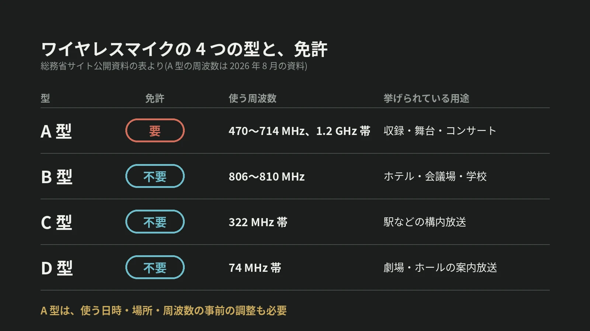

LOTUS VISUAL JOURNAL / 現場の裏側 #27
ワイヤレスマイクには、
免許の要る型がある。
A 型・B 型と、電波を分け合う決まり
結論から。ワイヤレスマイクは 4 つの型に分かれていて、A 型を使うには無線局の免許が要ります。ホテルや会議場向けの B 型は、免許が要りません。
催しの前に、会場で使われるマイクがどの型かを確かめます。
01 / FOUR TYPES4 つの型
総務省のサイトで公開されている資料は、ラジオマイク(ワイヤレスマイク)を A・B・C・D の 4 つの型に分けています。
A 型は、音声や楽器の音を特に高い品質で送るための型です。放送番組の収録、舞台、コンサートホール、大規模なイベント会場などが用途に挙げられ、無線局の免許が要ります。
B 型は、比較的良好な品質で送る型で、806〜810MHz を使います。出力は 10mW 以下。ホテル、結婚式場、会議場、学校、集会場などが用途に挙げられ、免許は要りません(特定小電力無線局)。C 型(322MHz 帯、1mW 以下)は駅のホームなどの構内放送用、D 型(74MHz 帯)は劇場やホールの案内放送用で、どちらも免許は要りません。
02 / A TYPEA 型が使う、3 つの帯
総務省のサイトで公開されている 2026 年 8 月の資料によると、A 型(特定ラジオマイク)がいま使っている周波数は 3 つです。
1 つめは、470〜710MHz のテレビホワイトスペース帯。地上デジタル放送が使っていない帯域を、二次的に使います。2 つめは、710〜714MHz の専用帯。3 つめは、1.2GHz 帯(1240〜1260MHz。1252〜1253MHz を除く)で、放送事業用の無線と共用です。
制度ができたのは 1989 年で、当時は 800MHz 帯でした。その後、700MHz 帯の周波数の再編に伴っていまの帯へ移り、移行は 2019 年に完了しています。
03 / COORDINATION使う前に、日時と場所と周波数を調整する
A 型には、免許のほかにもう 1 つ手順があります。同じ資料によると、A 型どうしの混信や、放送事業用の無線との混信を防ぐために、運用する日時・場所・周波数を関係者の間で共有し、事前に調整します。「運用調整」と呼ばれる手順です。B 型・C 型・D 型には、この調整は要りません。
数で見ると、特定ラジオマイクの無線局は 63,899 局(2026 年 6 月現在)。免許の要らない側は、推定で 270 万台以上が使われていて、そのほとんどが B 型とされています。
A 型のマイクを使う催しでは、免許を持つ側が、日時・場所・周波数の調整を済ませてから当日を迎えます。事前の手順なので、催しの日程と会場が決まったら、早めに音響の担当の方へ伝えます。
04 / ON SITELOTUS VISUAL へのご相談では
LOTUS VISUAL へのご相談では
LOTUS VISUAL は映像の担当ですが、電波を使う機材は映像の側にもあります。スタッフどうしの連絡に使うワイヤレスインカム、カメラの映像を送る無線伝送機です。
ご相談では、会場で使われるワイヤレスマイクの型と本数を、音響の担当の方にうかがいます。映像の側の無線機材は、国内向けの適合表示と、使う周波数帯を確かめてから持ち込みます。進行に欠かせない連絡と映像には、有線の経路も用意します。
05 / TAKEAWAY今日の持ち帰り
今日の持ち帰り
- ワイヤレスマイクは 4 つの型。A 型は無線局の免許が要る。B・C・D 型は要らない。
- A 型は、使う前に調整する。帯は 3 つ(テレビのすき間、専用帯、1.2GHz 帯)。日時・場所・周波数を事前に共有する。
- 催しの前に、型と本数を確かめる。映像の側の無線も、適合表示と周波数帯を確認する。